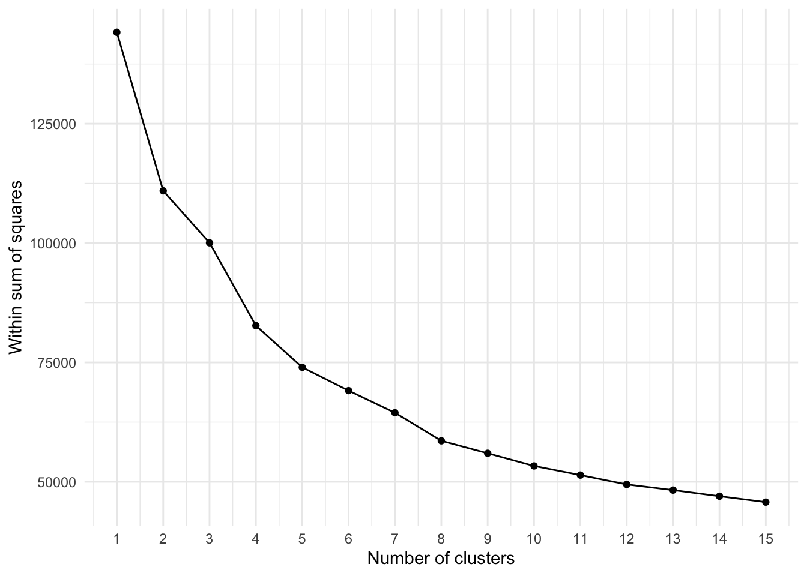
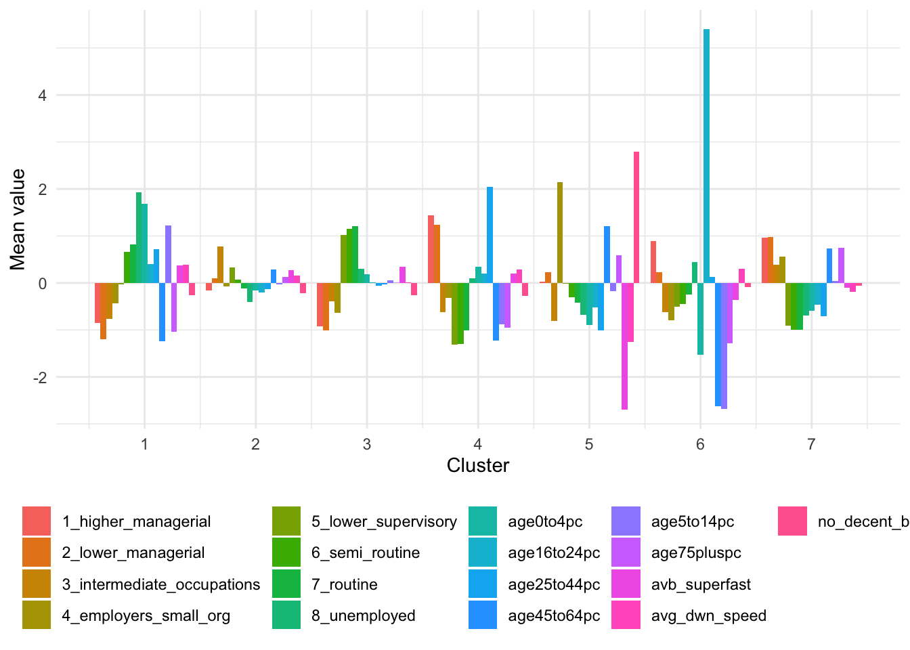
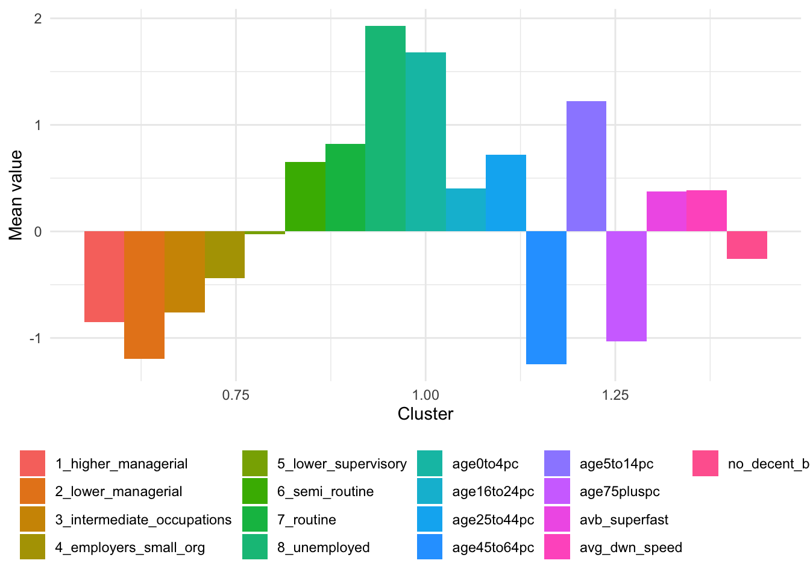
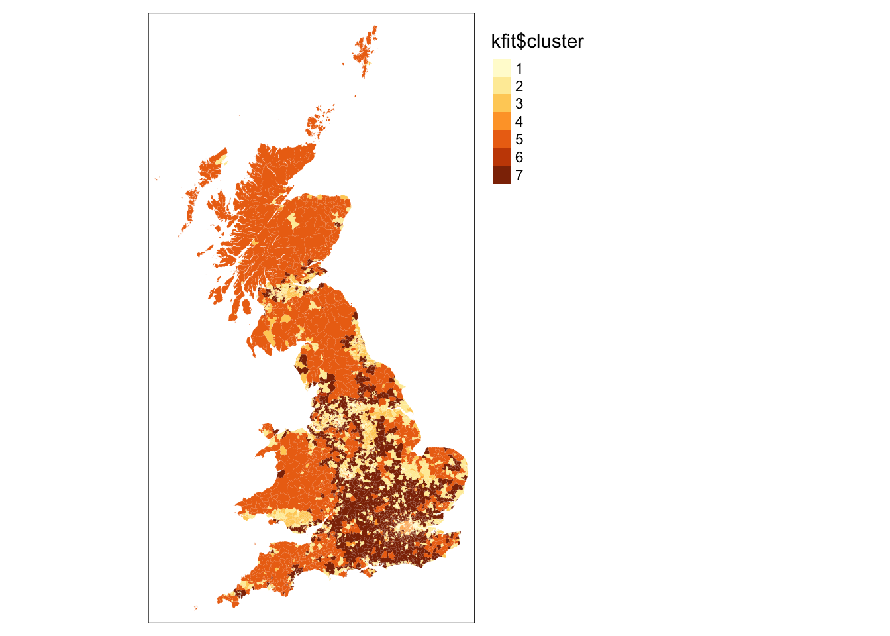

1 Geodemographics
This week we will see how we can use socio-demographic and socio-economic data to characterise neighbourhoods using geodemographics. Geodemographics is the “analysis of people by where they live (Harris et al. 2005) and as such entails representing the individual and collective identities that are manifest in observable neighbourhood structure” (Longley 2012). We will look at geodemographics by focusing on an existing geodemographic classification known as the Internet User Classification.
1.1 Lecture slides
You can download the slides of this week’s lecture here: [Link].
1.2 Reading list
Essential readings
- Longley, P. A. 2012. Geodemographics and the practices of geographic information science. International Journal of Geographical Information Science 26(12): 2227-2237. [Link]
- Martin, D., Gale, C., Cockings, S. et al. 2018. Origin-destination geodemographics for analysis of travel to work flows. Computers, Environment and Urban Systems 67: 68-79. [Link]
- Singleton, A., Alexiou, A. and Savani, R. 2020. Mapping the geodemographics of digital inequality in Great Britain: An integration of machine learning into small area estimation. Computers, Environment and Urban Systems 82: 101486. [Link]
- Singleton, A. and Spielman, S. 2014. The past, present, and future of geodemographic research in the United States and United Kingdom. The Professional Geographer 66(4): 558-567. [Link]
Suggested readings
- Goodman, A., Wilkinson, P., Stafford, M. et al. 2011. Characterising socio-economic inequalities in exposure to air pollution: A comparison of socio-economic markers and scales of measurement. Health & Place 17(3): 767-774. [Link]
1.3 Geodemographics
The CDRC Internet User Classification (IUC) is a bespoke geodemographic classification that describes how people residing in different parts of Great Britain interact with the Internet. For every Lower Super Output Area (LSOA) in England and Wales and Data Zone (DZ) (2011 Census Geographies), the IUC provides aggregate population estimates of Internet use and provides insights into the geography of the digital divide in the United Kingdom:
“Digital inequality is observable where access to online resources and those opportunities that these create are non-egalitarian. As a result of variable rates of access and use of the Internet between social and spatial groups (..), this leads to digital differentiation, which entrenches difference and reciprocates digital inequality over time” (Singleton et al. 2020).
1.3.1 Internet User Classification I
For the first part of this week’s practical material, we will be looking at the Internet User Classification (IUC) for Great Britain in more detail by mapping it.
Our first step is to download the IUC data set:
- Open a web browser and go to the data portal of the CDRC.
- Register if you need to, or if you are already registered, make sure you are logged in.
- Search for Internet User Classification.
- Scroll down and choose the download option for the IUC 2018 (CSV).
- Save the
iuc_gb_2018.csvfile in an appropriate folder.
Start by inspecting the data set in MS Excel, or any other spreadsheet software such as Apache OpenOffice Calc or Numbers. Also, have a look at the IUC 2018 User Guide that provides the pen portraits of every cluster, including plots of cluster centres and a brief summary of the methodology.
It is always a good idea to inspect your data prior to analysis to find out how your data look like. Of course, depending on the type of data, you can choose any tool you like to do this inspection (ArcGIS, R, QGIS, Microsoft Excel, etc.).

R code
# load libraries
library(tidyverse)
library(tmap)
# load data
iuc <- read_csv("data/index/iuc-gb-2018.csv")
# inspect
iuc# A tibble: 41,729 × 5
SHP_ID LSOA11_CD LSOA11_NM GRP_CD GRP_LABEL
<dbl> <chr> <chr> <dbl> <chr>
1 1 E01020179 South Hams 012C 5 e-Rational Utilitarians
2 2 E01033289 Cornwall 007E 9 Settled Offline Communities
3 3 W01000189 Conwy 015F 5 e-Rational Utilitarians
4 4 W01001022 Bridgend 014B 7 Passive and Uncommitted Users
5 5 W01000532 Ceredigion 007B 9 Settled Offline Communities
6 6 E01018888 Cornwall 071G 9 Settled Offline Communities
7 7 E01018766 Cornwall 028D 9 Settled Offline Communities
8 8 E01019948 East Devon 010C 9 Settled Offline Communities
9 9 W01000539 Ceredigion 005D 5 e-Rational Utilitarians
10 10 E01019171 Barrow-in-Furness 005E 6 e-Mainstream
# … with 41,719 more rowsR code
# inspect data types
str(iuc)spc_tbl_ [41,729 × 5] (S3: spec_tbl_df/tbl_df/tbl/data.frame)
$ SHP_ID : num [1:41729] 1 2 3 4 5 6 7 8 9 10 ...
$ LSOA11_CD: chr [1:41729] "E01020179" "E01033289" "W01000189" "W01001022" ...
$ LSOA11_NM: chr [1:41729] "South Hams 012C" "Cornwall 007E" "Conwy 015F" "Bridgend 014B" ...
$ GRP_CD : num [1:41729] 5 9 5 7 9 9 9 9 5 6 ...
$ GRP_LABEL: chr [1:41729] "e-Rational Utilitarians" "Settled Offline Communities" "e-Rational Utilitarians" "Passive and Uncommitted Users" ...
- attr(*, "spec")=
.. cols(
.. SHP_ID = col_double(),
.. LSOA11_CD = col_character(),
.. LSOA11_NM = col_character(),
.. GRP_CD = col_double(),
.. GRP_LABEL = col_character()
.. )
- attr(*, "problems")=<externalptr> Now the data are loaded we can move to acquiring our spatial data. As the IUC is created at the level of the Lower layer Super Output Area Census geography, we need to download its administrative borders. As the data set for the entire country is quite large, we will focus on Liverpool.
- Go to the UK Data Service Census support portal and select Boundary Data Selector.
- Set Country to England, Geography to Statistical Building Block, dates to 2011 and later, and click Find.
- Select English Lower Layer Super Output Areas, 2011 and click List Areas.
- Select Liverpool from the list and click Extract Boundary Data.
- Wait until loaded and download the
BoundaryData.zipfile. - Unzip and save the file.
You could also have downloaded the shapefile with the data already joined to the LSOA boundaries directly from the CDRC data portal, but this is the national data set and is quite large (75MB). Also, as we will be looking at Liverpool today we do not need all LSOAs in Great Britain..
Now we got the administrative boundary data, we can prepare the IUC map by joining our csv file with the IUC classification to the shapefile.
R code
# load libraries
library(sf)
library(tmap)
# load spatial data
liverpool <- st_read("data/boundaries/england_lsoa_2011.shp")Reading layer `england_lsoa_2011' from data source
`/Users/justinvandijk/Library/CloudStorage/Dropbox/UCL/Web/jtvandijk.github.io/GEOG0114Q/data/boundaries/england_lsoa_2011.shp'
using driver `ESRI Shapefile'
Simple feature collection with 298 features and 3 fields
Geometry type: POLYGON
Dimension: XY
Bounding box: xmin: 332390.2 ymin: 379748.5 xmax: 345636 ymax: 397980.1
Projected CRS: OSGB36 / British National Grid# inspect
tm_shape(liverpool) + tm_polygons()R code
# join data
liv_iuc <- left_join(liverpool, iuc, by = c(code = "LSOA11_CD"))
# inspect
liv_iucSimple feature collection with 298 features and 7 fields
Geometry type: POLYGON
Dimension: XY
Bounding box: xmin: 332390.2 ymin: 379748.5 xmax: 345636 ymax: 397980.1
Projected CRS: OSGB36 / British National Grid
First 10 features:
label name code SHP_ID LSOA11_NM
1 E08000012E02006934E01033755 Liverpool 062D E01033755 25097 Liverpool 062D
2 E08000012E02006932E01033758 Liverpool 060B E01033758 24070 Liverpool 060B
3 E08000012E02001356E01033759 Liverpool 010F E01033759 26845 Liverpool 010F
4 E08000012E02006932E01033762 Liverpool 060E E01033762 26866 Liverpool 060E
5 E08000012E02001396E01032505 Liverpool 050F E01032505 27848 Liverpool 050F
6 E08000012E02001396E01032506 Liverpool 050G E01032506 2429 Liverpool 050G
7 E08000012E02001396E01032507 Liverpool 050H E01032507 24242 Liverpool 050H
8 E08000012E02001373E01032508 Liverpool 027G E01032508 28413 Liverpool 027G
9 E08000012E02001373E01032509 Liverpool 027H E01032509 24339 Liverpool 027H
10 E08000012E02001354E01032510 Liverpool 008F E01032510 25167 Liverpool 008F
GRP_CD GRP_LABEL geometry
1 2 e-Professionals POLYGON ((334276.7 391012.8...
2 4 Youthful Urban Fringe POLYGON ((335723 391178, 33...
3 7 Passive and Uncommitted Users POLYGON ((338925 394476, 33...
4 1 e-Cultural Creators POLYGON ((334612.4 391111.7...
5 7 Passive and Uncommitted Users POLYGON ((335894.7 387448.3...
6 6 e-Mainstream POLYGON ((336256.7 387691.8...
7 3 e-Veterans POLYGON ((336803.5 387432.7...
8 10 e-Withdrawn POLYGON ((339299 391470, 33...
9 7 Passive and Uncommitted Users POLYGON ((338901 391308, 33...
10 7 Passive and Uncommitted Users POLYGON ((338018.2 395716.4...R code
# inspect
tm_shape(liv_iuc) + tm_fill(col = "GRP_LABEL") + tm_layout(legend.outside = TRUE)Let’s use the same colours as used on CDRC mapmaker by specifying the hex colour codes for each of our groups. Note the order of the colours is important: the colour for group 1 is first, group 2 second and so on.
R code
# define palette
iuc_colours <- c("#dd7cdc", "#ea4d78", "#d2d1ab", "#f36d5a", "#a5cfbc", "#e4a5d0",
"#8470ff", "#79cdcd", "#808fee", "#ffd39b")
# plot pretty
tm_shape(liv_iuc) + tm_fill(col = "GRP_LABEL", palette = iuc_colours) + tm_layout(legend.outside = TRUE)1.3.2 Tutorial task I
Now we have these cluster classifications, how can we link them to people? Try using the Mid-Year Population Estimates 2019 that you can download below to:
- calculate the total number of people associated with each cluster group for England and Wales as a whole; and
- create a pretty data visualisation showing the results (no map!).
File download
| File | Type | Link |
|---|---|---|
| LSOA-level Mid-Year Population Estimates England and Wales 2019 | csv |
Download |
| Lower-layer Super Output Areas Great Britain 2011 | shp |
Download |
1.3.3 k-means clustering
In several cases, including the 2011 residential-based area classifications and the Internet User Classification, a technique called k-means clustering is used in the creation of a geodemographic classification. K-means clustering aims to partition a set of observations into a number of clusters (k), in which each observation will be assigned to the cluster with the nearest mean. As such, a cluster refers to a collection of data points aggregated together because of certain similarities (i.e. standardised scores of your input data). In order to run a k-means clustering, you first define a target number k of clusters that you want. The k-means algorithm subsequently assigns every observation to one of the clusters by finding the solution that minimises the total within-cluster variance. For the second part of this week’s practical material, we will be replicating part of the Internet User Classification for Great Britain. For this we will be using an MSOA-level input data set containing various socio-demographic and socio-economic variables that you can download below together with the MSOA administrative boundaries.
The data set contains the following variables:
| Variable | Definition |
|---|---|
msoa11cd |
MSOA Code |
age_total, age0to4pc, age5to14pc, age16to24pc, age25to44pc, age45to64pc, age75pluspc |
Percentage of people in various age groups |
nssec_total, 1_higher_managerial, 2_lower_managerial, 3_intermediate_occupations, 4_employers_small_org, 5_lower_supervisory, 6_semi_routine, 7_routine, 8_unemployed |
Percentage of people in selected operational categories and sub-categories classes drawn from the National Statistics Socio-economic Classification (NS-SEC) |
avg_dwn_speed, avb_superfast, no_decent_bband, bband_speed_under2mbs, bband_speed_under10mbs, bband_speed_over30mbs |
Measures of broadband use and internet availability |
File download
| File | Type | Link |
|---|---|---|
| Middle-layer Super Output Areas Great Britain 2011 | shp |
Download |
| MSOA-level input variables for IUC | csv |
Download |
R code
# load data
iuc_input <- read_csv("data/index/msoa-iuc-input.csv")
# inspect
head(iuc_input)# A tibble: 6 × 23
msoa11cd age_total age0to4pc age5to…¹ age16…² age25…³ age45…⁴ age75…⁵ nssec…⁶
<chr> <dbl> <dbl> <dbl> <dbl> <dbl> <dbl> <dbl> <dbl>
1 E02000001 7375 0.032 0.0388 0.0961 0.407 0.273 0.0607 5816
2 E02000002 6775 0.0927 0.122 0.113 0.280 0.186 0.0980 3926
3 E02000003 10045 0.0829 0.102 0.118 0.306 0.225 0.0646 6483
4 E02000004 6182 0.0590 0.102 0.139 0.254 0.250 0.0886 4041
5 E02000005 8562 0.0930 0.119 0.119 0.299 0.214 0.0501 5368
6 E02000007 8791 0.103 0.125 0.129 0.285 0.197 0.0688 5158
# … with 14 more variables: `1_higher_managerial` <dbl>,
# `2_lower_managerial` <dbl>, `3_intermediate_occupations` <dbl>,
# `4_employers_small_org` <dbl>, `5_lower_supervisory` <dbl>,
# `6_semi_routine` <dbl>, `7_routine` <dbl>, `8_unemployed` <dbl>,
# avg_dwn_speed <dbl>, avb_superfast <dbl>, no_decent_bband <dbl>,
# bband_speed_under2mbs <dbl>, bband_speed_under10mbs <dbl>,
# bband_speed_over30mbs <dbl>, and abbreviated variable names ¹age5to14pc, …Before running our k-means clustering algorithm, we need to extract the data which we want to use; i.e. we need to remove all the columns with data that we do not want to include in the clustering process.
R code
# column names
names(iuc_input) [1] "msoa11cd" "age_total"
[3] "age0to4pc" "age5to14pc"
[5] "age16to24pc" "age25to44pc"
[7] "age45to64pc" "age75pluspc"
[9] "nssec_total" "1_higher_managerial"
[11] "2_lower_managerial" "3_intermediate_occupations"
[13] "4_employers_small_org" "5_lower_supervisory"
[15] "6_semi_routine" "7_routine"
[17] "8_unemployed" "avg_dwn_speed"
[19] "avb_superfast" "no_decent_bband"
[21] "bband_speed_under2mbs" "bband_speed_under10mbs"
[23] "bband_speed_over30mbs" # extract columns by index
cluster_data <- iuc_input[, c(3:8, 10:17, 18:20)]
# inspect
head(cluster_data)# A tibble: 6 × 17
age0to4pc age5to14pc age16to…¹ age25…² age45…³ age75…⁴ 1_hig…⁵ 2_low…⁶ 3_int…⁷
<dbl> <dbl> <dbl> <dbl> <dbl> <dbl> <dbl> <dbl> <dbl>
1 0.032 0.0388 0.0961 0.407 0.273 0.0607 0.385 0.339 0.0781
2 0.0927 0.122 0.113 0.280 0.186 0.0980 0.0568 0.171 0.143
3 0.0829 0.102 0.118 0.306 0.225 0.0646 0.0818 0.208 0.182
4 0.0590 0.102 0.139 0.254 0.250 0.0886 0.0678 0.206 0.191
5 0.0930 0.119 0.119 0.299 0.214 0.0501 0.0494 0.166 0.156
6 0.103 0.125 0.129 0.285 0.197 0.0688 0.0564 0.163 0.136
# … with 8 more variables: `4_employers_small_org` <dbl>,
# `5_lower_supervisory` <dbl>, `6_semi_routine` <dbl>, `7_routine` <dbl>,
# `8_unemployed` <dbl>, avg_dwn_speed <dbl>, avb_superfast <dbl>,
# no_decent_bband <dbl>, and abbreviated variable names ¹age16to24pc,
# ²age25to44pc, ³age45to64pc, ⁴age75pluspc, ⁵`1_higher_managerial`,
# ⁶`2_lower_managerial`, ⁷`3_intermediate_occupations`We also need to rescale the data so all input data are presented on a comparable scale: the average download speed data (i.e. avg_dwn_speed) is very different to the other data that, for instance, represent the percentage of the population by different age groups.
R code
# rescale
cluster_data <- scale(cluster_data)
# inspect
head(cluster_data) age0to4pc age5to14pc age16to24pc age25to44pc age45to64pc age75pluspc
[1,] -1.7579913 -2.8680309 -0.36823669 2.1768529 0.2561260 -0.6039803
[2,] 1.9519376 1.6403191 -0.05766949 0.1671857 -1.5639740 0.6215590
[3,] 1.3549320 0.5475394 0.02888699 0.5773908 -0.7424464 -0.4769094
[4,] -0.1050147 0.5938501 0.40759191 -0.2402277 -0.2247116 0.3136111
[5,] 1.9687596 1.5173858 0.05639359 0.4733916 -0.9785969 -0.9539525
[6,] 2.6064366 1.8434062 0.22116720 0.2379171 -1.3168781 -0.3384050
1_higher_managerial 2_lower_managerial 3_intermediate_occupations
[1,] 4.4185012 1.8391416 -2.2291104
[2,] -0.8510113 -0.9272602 0.1031344
[3,] -0.4499409 -0.3266302 1.5123844
[4,] -0.6741298 -0.3469851 1.8104058
[5,] -0.9705088 -1.0065195 0.5809449
[6,] -0.8571773 -1.0674213 -0.1494470
4_employers_small_org 5_lower_supervisory 6_semi_routine 7_routine
[1,] -1.02298662 -2.53130431 -2.49888739 -1.81145433
[2,] 0.39745656 -0.67859270 1.05051667 0.08877827
[3,] 0.28308676 -0.37987493 -0.05595897 -0.52802287
[4,] 0.13591535 0.24587683 -0.15093353 -0.07008362
[5,] 0.09942212 0.42532220 0.76747039 0.35318453
[6,] -0.18786941 0.05518013 0.56442659 0.57156979
8_unemployed avg_dwn_speed avb_superfast no_decent_bband
[1,] -0.5139854 -1.6561653 -5.2186970 -0.3797659
[2,] 1.1777334 0.7915882 0.5093876 -0.2031415
[3,] 0.7615830 0.6354463 0.5222597 -0.3797659
[4,] 0.2898589 0.9477301 0.5480039 -0.2472976
[5,] 0.8482656 0.4701196 0.2648177 0.2384195
[6,] 1.5510655 0.6813704 0.4965155 -0.1589854Now our data are all on the same scale, we will start by creating an elbow plot. The elbow method is a visual aid that can help in determining the number of clusters in a data set. Remember: this is important because with a k-means clustering you need to specify the numbers of clusters a priori!
The elbow method can help as it plots the total explained variation (‘Within Sum of Squares’) in your data as a function of the number of cluster. The idea is that you pick the number of clusters at the ‘elbow’ of the curve as this is the point in which the additional variation that would be explained by an additional cluster is decreasing. Effectively this means you are actually running the k-means clustering multiple times before running the actual k-means clustering algorithm.
R code
# create empty list to store the within sum of square values
wss_values <- list()
# execute a k-means clustering for k=1, k=2, ..., k=15
for (i in 1:15) {
wss_values[i] <- sum(kmeans(cluster_data, centers = i, iter.max = 30)$withinss)
}
# inspect
wss_values[[1]]
[1] 144143
[[2]]
[1] 110934.1
[[3]]
[1] 96047.06
[[4]]
[1] 82701.63
[[5]]
[1] 76194.75
[ reached getOption("max.print") -- omitted 10 entries ]R code
# vector to dataframe
wss_values <- as.data.frame(wss_values)
# transpose
wss_values <- as.data.frame(t(wss_values))
# add cluster numbers
wss_values$cluster <- seq.int(nrow(wss_values))
names(wss_values) <- c("wss", "cluster")
# plot using ggplot2
ggplot(data = wss_values, aes(x = cluster, y = wss)) + geom_point() + geom_path() +
scale_x_continuous(breaks = seq(1, 15)) + xlab("Number of clusters") + ylab("Within sum of squares") +
theme_minimal()
Based on the elbow plot, we can now choose the number of clusters and it looks like 7 clusters would be a reasonable choice.
The interpretation of an elbow plot can be quite subjective and often multiple options would be justified: 6, 8, and perhaps 9 clusters also do not look unreasonable. You would need to try the different options and see what output you get to determine the ‘optimal’ solution. However, at very least, the elbow plot does give you an idea of what would potentially be an adequate number of clusters.
Now we have decided on the number of clusters (i.e. 7 clusters), we can run our cluster analysis. We will be running this analysis 10 times because there is an element of randomness within the clustering, and we want to make sure we get the optimal clustering output.
R code
# create empty list to store the results of the clustering
clusters <- list()
# create empty variable to store fit
fit <- NA
# run the k-means 10 times
for (i in 1:10) {
# keep track of the runs
print(paste0("starting run: ", i))
# run the k-means clustering algorithm to extract 7 clusters
clust7 <- kmeans(x = cluster_data, centers = 7, iter.max = 1e+06, nstart = 1)
# get the total within sum of squares for the run and
fit[i] <- clust7$tot.withinss
# update the results of the clustering if the total within sum of squares
# for the run is lower than any of the runs that have been executed so far
if (fit[i] < min(fit[1:(i - 1)])) {
clusters <- clust7
}
}[1] "starting run: 1"
[1] "starting run: 2"
[1] "starting run: 3"
[1] "starting run: 4"
[1] "starting run: 5"
[1] "starting run: 6"
[1] "starting run: 7"
[1] "starting run: 8"
[1] "starting run: 9"
[1] "starting run: 10"# inspect
clustersK-means clustering with 7 clusters of sizes 2050, 542, 741, 186, 1818, 1106, 2037
Cluster means:
age0to4pc age5to14pc age16to24pc age25to44pc age45to64pc age75pluspc
1_higher_managerial 2_lower_managerial 3_intermediate_occupations
4_employers_small_org 5_lower_supervisory 6_semi_routine 7_routine
8_unemployed avg_dwn_speed avb_superfast no_decent_bband
[ reached getOption("max.print") -- omitted 7 rows ]
Clustering vector:
[1] 3 6 7 7 6
[ reached getOption("max.print") -- omitted 8475 entries ]
Within cluster sum of squares by cluster:
[1] 11694.290 6277.839 7810.400 3401.821 12888.519
[ reached getOption("max.print") -- omitted 2 entries ]
(between_SS / total_SS = 56.3 %)
Available components:
[1] "cluster" "centers" "totss" "withinss" "tot.withinss"
[ reached getOption("max.print") -- omitted 4 entries ]We now have to execute a bit of post-processing to extract some useful summary data for each cluster: the cluster size (size) and mean values for each cluster.
R code
# assign to new variable for clarity
kfit <- clusters
# cluster sizes
kfit_size <- kfit$size
# inspect
kfit_size[1] 2050 542 741 186 1818
[ reached getOption("max.print") -- omitted 2 entries ]# mean values for each variable in each cluster
kfit_mean <- as_tibble(aggregate(cluster_data, by = list(kfit$cluster), FUN = mean))
names(kfit_mean)[1] <- "cluster"
# inspect
kfit_mean# A tibble: 7 × 18
cluster age0to4pc age5to14pc age16to…¹ age25…² age45…³ age75…⁴ 1_hig…⁵ 2_low…⁶
<int> <dbl> <dbl> <dbl> <dbl> <dbl> <dbl> <dbl> <dbl>
1 1 -0.00623 -0.0805 -0.0519 -0.157 0.0898 0.162 -0.838 -0.851
2 2 -0.879 -0.149 -0.523 -0.997 1.22 0.553 0.0242 0.225
3 3 0.326 -0.919 0.208 2.04 -1.23 -0.927 1.50 1.26
4 4 -1.52 -2.68 5.42 0.113 -2.62 -1.28 0.870 0.223
5 5 -0.680 -0.0427 -0.464 -0.774 0.764 0.858 0.841 0.890
6 6 1.57 1.14 0.382 0.626 -1.13 -0.955 -0.906 -1.26
7 7 0.0167 0.118 -0.172 0.0200 0.202 -0.104 -0.0480 0.210
# … with 9 more variables: `3_intermediate_occupations` <dbl>,
# `4_employers_small_org` <dbl>, `5_lower_supervisory` <dbl>,
# `6_semi_routine` <dbl>, `7_routine` <dbl>, `8_unemployed` <dbl>,
# avg_dwn_speed <dbl>, avb_superfast <dbl>, no_decent_bband <dbl>, and
# abbreviated variable names ¹age16to24pc, ²age25to44pc, ³age45to64pc,
# ⁴age75pluspc, ⁵`1_higher_managerial`, ⁶`2_lower_managerial`R code
# transform shape to tidy format
kfit_mean_long <- pivot_longer(kfit_mean, cols = (-cluster))
# plot using ggplot2
ggplot(kfit_mean_long, aes(x = cluster, y = value, fill = name)) + geom_bar(stat = "identity",
position = "dodge") + scale_x_continuous(breaks = seq(1, 7, by = 1)) + xlab("Cluster") +
ylab("Mean value") + theme_minimal() + theme(legend.title = element_blank(),
legend.position = "bottom")
Your values may be slightly different due to the random choice of initial cluster centres.
Looking at the table with the mean values for each cluster and the barplot, we can see that variables contribute differently to the different clusters. The graph is a little busy, so you might want to look at the cluster groups or variables individually to get a better picture of each cluster.
R code
# plot using ggplot2
ggplot(kfit_mean_long[kfit_mean_long$cluster == 1, ], aes(x = cluster, y = value,
fill = name)) + geom_bar(stat = "identity", position = "dodge") + xlab("Cluster") +
ylab("Mean value") + theme_minimal() + theme(legend.title = element_blank(),
legend.position = "bottom")
We can also show the results of our geodemographic classification on a map.
R code
# read shape
msoa <- st_read("data/boundaries/gb_msoa11_sim.shp")Reading layer `gb_msoa11_sim' from data source
`/Users/justinvandijk/Library/CloudStorage/Dropbox/UCL/Web/jtvandijk.github.io/GEOG0114Q/data/boundaries/gb_msoa11_sim.shp'
using driver `ESRI Shapefile'
Simple feature collection with 8480 features and 3 fields
Geometry type: MULTIPOLYGON
Dimension: XY
Bounding box: xmin: 5513 ymin: 5342.7 xmax: 655604.7 ymax: 1220302
Geodetic CRS: WGS 84# set projection
st_crs(msoa) = 27700
# simplify for speedier plotting
msoa <- st_simplify(msoa, dTolerance = 100)
# join
cluster_data <- cbind(iuc_input, kfit$cluster)
msoa <- left_join(msoa, cluster_data, by = c(geo_code = "msoa11cd"))
# plot
tm_shape(msoa) + tm_fill(col = "kfit$cluster") + tm_layout(legend.outside = TRUE)
Your map might look different as the cluster numbers are not consistently assigned and therefore colours can be map onto the cluster numbers differently.
1.3.4 Tutorial task II
The creation of a geodemographic classification is an iterative process of trial and error that involves the addition and removal of variables as well as experimentation with different numbers of clusters. It also might be, for instances, that some clusters are very focused on one group of data (e.g. age) and it could be an idea to group some ages together. If you want to make changes to the clustering solution, you can simply re-run the analysis with a different set of variables or with a different number of clusters by updating the code. However, it would be even simpler if you could automate some of the process.
Try to create a R function that:
- takes at least the following three arguments: a data frame that contains your input data, the number of clusters that you want, and a list of input variables;
- executes a k-means clustering on the input variables and the specified number of clusters; and,
- produces a
csvfile that contains the table of means of the solution.
- Your function could look something like:
run-kmeans(dataframe,number_of_clusters,input_variables) - The list of input variables does not have to be a list of names, but can also be a list containing the index values of the columns.
- Have a look at Hadley Wickhams explanation of functions in R.
1.4 Before you leave
Having finished this tutorial, you should now understand the basics of a geodemographic classification. In addition, you should have written a simple function. Although you have now reached the end of this week’s content, you could try and improve your function. Consider:
- Including maps or graphs in the code that get automatically saved.
- Ensuring that the
csvoutcome does not get overwritten every time you run you function. - Including optional arguments in your function with default values if certain values are not specified.